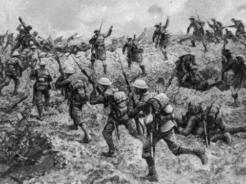

Os eventos nos conflitos locais eram tão tumultuosos quanto nas grandes frentes de batalha, tentando os participantes mobilizar a sua mão de obra e recursos econômicos para lutar uma guerra total. Até o final da guerra, quatro grandes potências imperiais — os impérios Alemão, Russo, Austro-Húngaro e Otomano — deixaram de existir. Os Estados sucessores dos dois primeiros perderam uma grande quantidade de seu território, enquanto os dois últimos foram completamente desmontados. O mapa da Europa central foi redesenhado em vários novos países menores.[13] A Liga das Nações, organização precursora das Nações Unidas, foi formada na esperança de evitar outro conflito dessa magnitude. Esses esforços falharam, exacerbando o nacionalismo nos vários países, a depressão econômica, as repercussões da derrota da Alemanha e os problemas com o Tratado de Versalhes, que foram fatores que contribuíram para o início da Segunda Guerra Mundial.
 O ponto mais polêmico do fim da Primeira Guerra Mundial, sem dúvida, foi o Tratado de Versalhes, acordo que continha os termos que os vencedores — França e Grã-Bretanha — impuseram contra a Alemanha, derrotada. O acordo do Tratado de Versalhes foi assinado, em junho de 1919, na Galeria dos Espelhos, no Palácio de Versalhes — o mesmo local onde a França havia reconhecido sua derrota na Guerra Franco-Prussiana)Entre as imposições, a Alemanha ficou proibida de ter navios e aviões de guerra, além de poder ter apenas 100 mil soldados recrutados. O país perdeu todas as suas colônias na África e foi obrigado a pagar uma indenização astronômica de guerra. O pagamento dessa indenização contribuiu para que a Alemanha vivesse, na década de 1920, a pior crise econômica de sua história.
O Tratado de Versalhes foi considerado um acordo humilhante para a Alemanha e as dificuldades que esse tratado criou para o país foram amplamente exploradas pela retórica dos movimentos de extrema-direita, dos quais estão o nazismo.